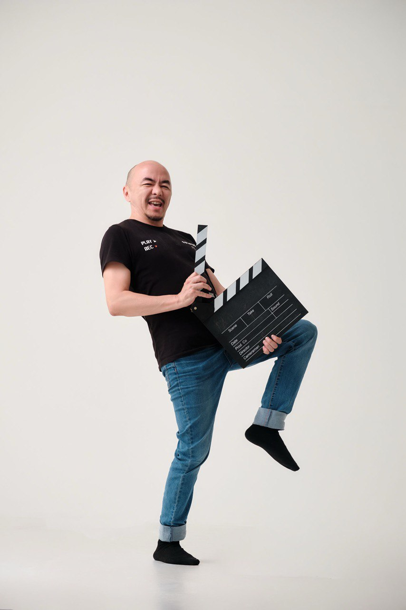
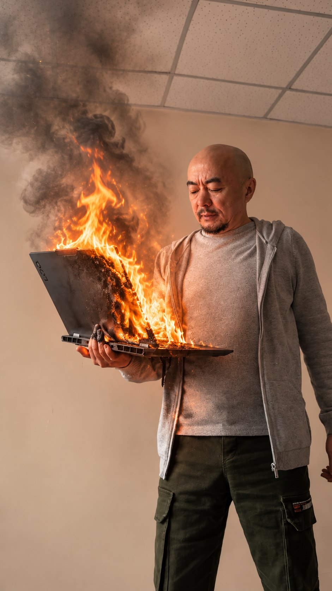

Разберём, как уверенно проявляться на камеру и превращать видео в инструмент развития бизнеса.
Астана, 28 ноября. Программа 👇
Если узнаешь себя — этот практикум для тебя:
Тем, кто устал откладывать съемку Reels и выходы в эфир из-за липкого страха осуждения.
Которые понимают, что медийность — это деньги, но перед камерой у них выключается мозг и пересыхает в горле.
Чей главный тормоз — мысль «Что подумают коллеги, друзья или конкуренты?».
Кому нужна точечная практика здесь и сейчас, а не месяц теории.
Менее грамотные спикеры забирают твоих клиентов просто потому, что не боятся говорить на всю Астану.
В жизни ты общительный и уверенный, но красная точка записи превращает тебя в деревянного истукана.
Хочешь за один вечер понять, как работает твоя подача, и получить жесткую обратную связь от профи.

Авторадио (Алматы), Русское Радио (Семей), Радио 7 (Семей).
Человек, который знает о работе перед микрофоном и камерой всё: от настройки голоса до управления вниманием тысячи людей.
Без теории из книжек. Никакой воды и «психологических медитаций». Только рабочие технологии, физиология речи и точечная механика снятия зажимов.
Передал опыт сотен эфиров в жесткий 3-часовой алгоритм, который дает результат прямо на площадке.

Контент с использованием AI-инструментов (Kling, Seedance, Claude и др.).
Показываем, как совмещать живую харизму в кадре с нейросетями: автоматический монтаж, динамичные эффекты и создание визуала, который удерживает внимание аудитории.
Мы не обещаем, что страх камеры испарится за один вечер навсегда. Чудес не бывает. Но за день мы убираем мандраж, от которого сводит челюсть. А на то, чтобы сделать уверенность нормой, уйдет несколько недель практики.
Честно? Да. Но именно с этого начинается нормальный медийный рост, а не со сказок про «уверенность с первой секунды».
Без воды: экспресс-перепрошивка, разбор твоих блоков и постановка опоры голоса.
30 секунд, снят в людном месте, с первого-второго дубля.
Снимают зажим за минуту: выдох, челюсть, пауза.
Фиксация результатов по шкале от 0 до 10: до и после.
Чёткая самопрезентация, которую вы говорите без бумажки.
Реальные сообщения после работы на практикуме
Рахмет за приглашение! Было очень полезно и познавательно ✊ надеюсь благодаря вашим курсам получить желаемый результат 🤌
И Вам спасибо за такой информативный вечер! Легкая, понятная и интересная подача. Как и говорила в живую, много мыслей подтвердила для себя, значит двигаюсь в нужном направлении! Желаю успехов, Мурат!
Мурат, вам спасибо огромное за практикум! Было интересно и полезно. Понравилось, что можно было свободно высказывать свои мысли, не бояться говорить и быть собой, чего я всегда боялась и боюсь 😄 Такие встречи помогают раскрепоститься, посмотреть на себя по-новому и, возможно, заметить то, чего раньше за собой не замечала. И иногда даже один практикум может дать толчок к изменениям. Благодарю за такую возможность и приятную атмосферу!
3 часа точечной работы на площадке
Фиксация базового уровня волнения и постановка задачи.
Механика дыхания, работа с челюстью и опора голоса.
Первые дубли, разбор подачи и работа на камеру.
Выход из зоны комфорта.
Повторный замер, обратная связь и план дальнейшего роста.